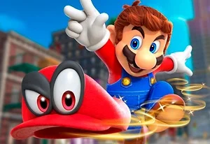
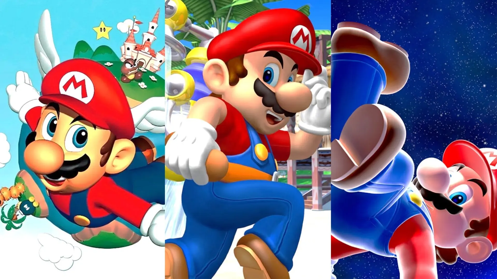

SUPER MARIO ODYSSEY
Lanzada en 2017, Super Mario Odyssey es la decimonovena entrega de la serie. Se trata de un videojuego de plataformas a mundo abierto que destaca por su innovadora mecánica de juego a comparación de los anteriores Super Mario. En este título, nos adentramos en una aventura de Mario junto a Cappy, un espíritu que va en su sombrero y es capaz de poseer objetos, con el objetivo de rescatar a la princesa Peach de las manos de Bowser.
SUPER MARIO 3D ALL STARS
Anunciado con motivo del 35 aniversario de Mario, Super Mario 3D All-Stars es un recopilatorio especial de juegos que incluye Super Mario 64, Super Mario Sunshine y Super Mario Galaxy. Todo ello con gráficos en alta definición, controles adaptados a los mandos Joy-Con y un reproductor de música que ofrece las épicas bandas sonoras de los tres juegos.
Política de privacidad | Términos de uso (Inglés) | Preferencias de Cookies
Game trademarks and copyrights are properties of their respective owners.
Nintendo properties are trademarks of Nintendo. © 2020 Nintendo.